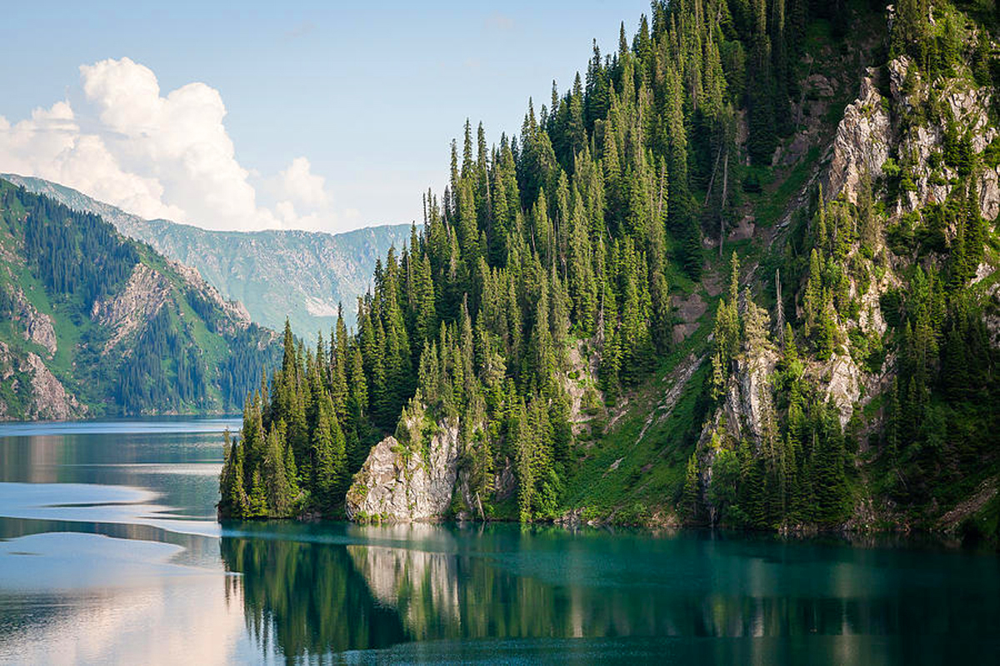
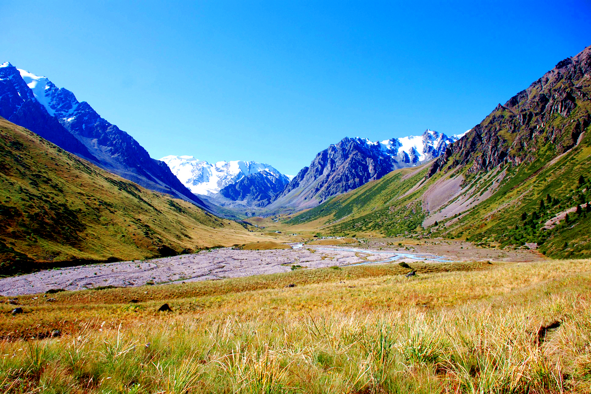
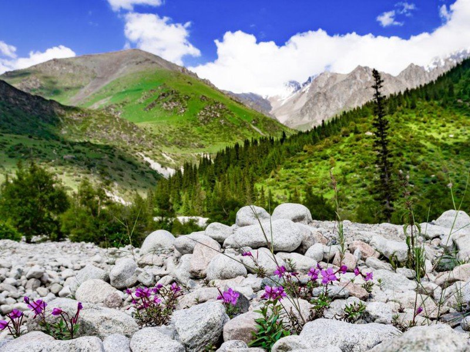

Природные достопримечательности Кыргызстана
Кыргызстан— страна с уникальной природой, где горы, озера, реки и зелёные долины создают неповторимые природные ландшафты. Вот несколько основных природных достопримечательностей Кыргызстана:
Иссык-Куль
Это одно из крупнейших озер мира, расположенное в предгорьях Тянь-Шаня. Иссык-Куль-уникальное соленое озеро, не имеющее стока, окруженное высокими горами. Озеро славится своими живописными пляжами, кристально чистой водой и горячими источниками в окрестных районах.
Также стоит отметить уникальный национальный парк "Ала-Арча", который является важным объектом для сохранения местной флоры и фауны. В Кыргызстане есть десятки природных заповедников, предлагающих туристам незабываемые виды и отдых на природе.

Сары-Челек
Озеро Сары-Челек находится в одноименном заповеднике и считается одним из самых красивых в Кыргызстане. Оно окружено высокими горными хребтами, в нем живет много видов редких животных и птиц, а также можно встретить уникальную флору. Это место привлекает туристов, желающих насладиться природой в её первозданном виде.
Чон-Кемин
Национальный парк Чон-Кемин — это огромная долина с удивительными природными пейзажами, высокими горными хребтами и зелеными лугами. В этом регионе можно найти реки, озера и водопады, а также множество мест для активного отдыха, таких как туризм, альпинизм и конные прогулки.
Тунук и Каракол
Горы Тунук и Каракол— это известные туристические направления для любителей горных походов. Эти места предлагают живописные виды на горы, долины и леса. Также здесь находится знаменитое Каракольское озеро, окруженное высокими горами.

Горы Тянь-Шаня
Горы Тянь-Шаня — одна из самых высоких горных систем в мире. В этих горах находятся многие природные достопримечательности Кыргызстана, такие как ледники, высокогорные озера, альпийские луга и редкие виды флоры и фауны.

Ала-Арча
Национальный парк Ала-Арча расположен всего в 40 км от столицы, города Бишкек, и является популярным местом для отдыха и туризма. Здесь можно насладиться горами, реками, альпийскими лугами и водопадами, а также попробовать себя в альпинизме и горных походах.
Заключение
Природные достопримечательности Кыргызстана — это не только красивейшие пейзажи, но и уникальная флора и фауна, которые привлекают путешественников со всего мира. Это страна для тех, кто ценит живую природу и желает исследовать нетронутые уголки планеты.